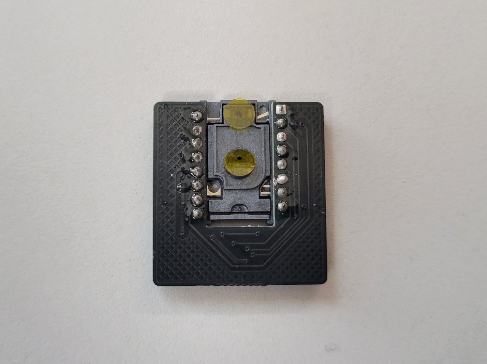
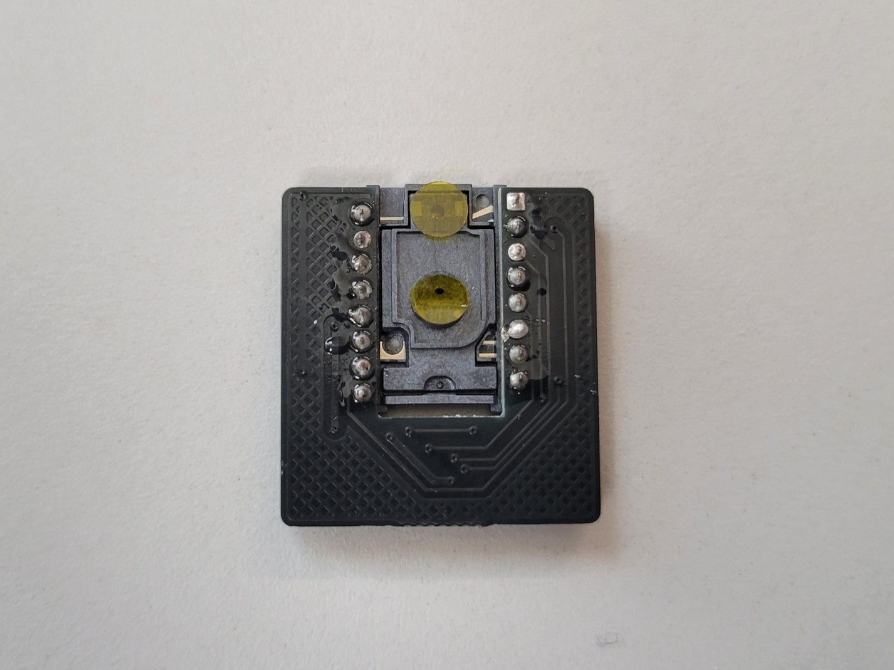
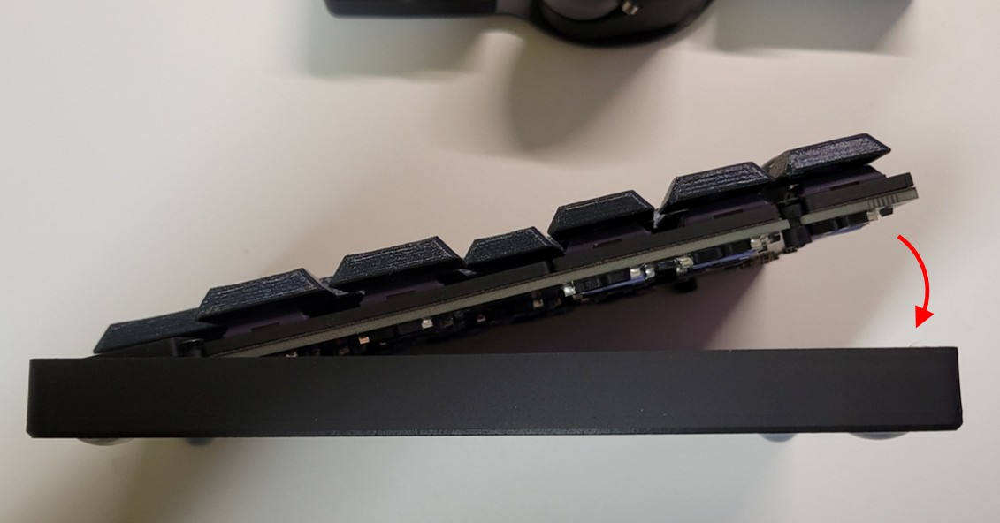
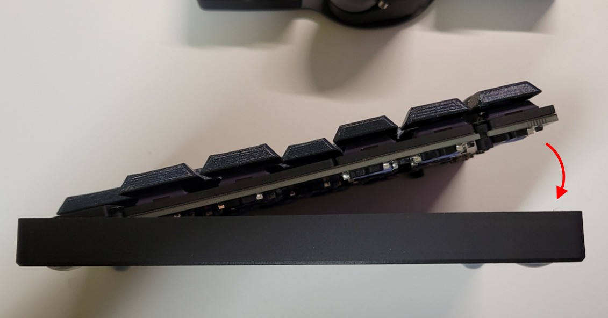
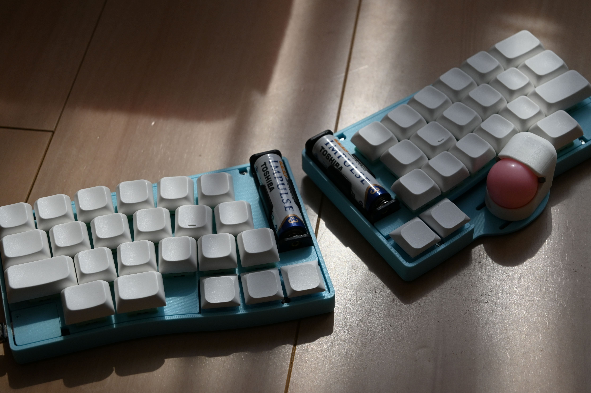

Soa44 について
Soa44は44キーの分割型キーボードで、右手親指部分に25mmトラックボールを搭載した無線キーボードです。Grin配列を採用し、ゴムブッシュを使用した簡易ガスケットマウント構造になっています。
組み立てを始める前に
組み立てを開始する前に、以下の重要な注意事項を必ずお読みください。
はんだ付けをする際には必ず電池を外してから行ってください。
電池が入ったままの状態でのはんだ付けは危険です。
このキーボードを車内に長時間放置しないでください。
長期間使用しない場合はキーボードから電池を外して保管してください。
XIAOとPMW3610センサーのはんだ付けはとても難しいです。
細かいピッチのはんだ付けとなるため、十分に注意して作業してください。
作業前のチェックリスト
- ✅ 必要な部品と工具が揃っている
- ✅ 作業スペースが十分に確保されている
- ✅ 換気の良い場所で作業する
- ✅ 静電気対策を行っている
- ✅ はんだごての温度設定を確認している
目次
- ステップ 1: 必要な部品の確認
- ステップ 2: Chocソケットのはんだ付け
- ステップ 3: XIAO nRF52840 Plusの取り付け
- ステップ 4: 電池ホルダーの取り付け
- ステップ 5: PMW3610センサー（トラックボール）の取り付け
- ステップ 6: ファームウェアの書き込み
- ステップ 7: センサー基板の接続
- ステップ 8: 動作テスト
- ステップ 9: トラックボールケースの組み立て
- ステップ 10: スイッチの取り付け
- ステップ 11: ケースの組み立て
- 完成！
- LEDインジケータの説明
- マウス操作について
- おすすめカスタマイズ
- あなたのSoa44を投稿
- トラブルシューティング
ステップ 1: 必要な部品の確認
キット付属品
- PCB（左右各1枚、計2枚）
- ケース（上下カバー、左右各1セット）
- 25mmトラックボール（1個）
- PMW3610センサー（1個）
- 電池ホルダー（2個）
- ゴムブッシュ
- ネジ類
別途用意が必要な部品
- XIAO nRF52840 Plus（2個）
- 単三電池（2個）
- Chocスイッチ（44個）
- キーキャップ（44個）
必要な工具
- はんだごて（温度調節機能付き推奨）
- はんだ（0.6mm程度）
- フラックス
- はんだ吸い取り線
- プラスドライバー（細い物）
- USB-Cケーブル
- ピンセット
ステップ 2: Chocソケットのはんだ付け

Chocソケットを左右のPCBにはんだ付けします。
すべてロープロ化するには別途Chocソケットを用意してください。
- 白のシルクに沿ってソケットを載せる
- ソケットがPCBにしっかりはまっていることを確認
- ソケットの端子をはんだ付け
ステップ 3: XIAO nRF52840 Plusの取り付け

左右のPCBにXIAO nRF52840 Plusをはんだ付けします。
先の細いはんだごてを使用し、隣のランドとブリッジしないよう注意してください。
- 左右のPCBの表側にXIAO nRF52840 Plusを配置
- ピンヘッダを写真のようにさし、位置を決める
- ピンヘッダをさしていない側の端子をはんだ付け
- ピンヘッダを外し、反対側の端子をはんだ付け
- 裏側の端子をはんだ付け
ステップ 4: 電池ホルダーの取り付け
左右のPCBに電池ホルダーをはんだ付けします。
-側(ばねのある方)が手前になります。
- 電池ホルダーを左右のPCBの表側に配置
- マスキングテープで仮固定
- 裏面から電池ホルダーの端子をはんだ付け
- はんだ付け後、飛び出している足をニッパーでカット
ステップ 5: PMW3610センサー（トラックボール）の取り付け

 

右手側PCBにPMW3610センサーを取り付けます。
- センサー基板をセンサー基板に配置(向きは写真を確認)
- 浮きがないようにマスキングテープで仮固定
- センサーの各端子をはんだ付け
- センサーの保護シールをはがす
ステップ 6: ファームウェアの書き込み
ZMKファームウェアをXIAO nRF52840 Plusに書き込みます。
詳しい手順は下記の動画が参考になります。

↑ クリックして動画を視聴
- ZMKリポジトリをフォークする
- KeymapEditorでキーマップを変更し保存する
- ビルドが完了したらファームウェアをダウンロード
- 左のXiaoにUSB接続、リセットボタンを2回素早く押してブートローダーモードに入る
- settings_reset-seeeduino_xiao_ble-zmk.uf2を書き込み
- 右にも同様にsettings_reset-seeeduino_xiao_ble-zmk.uf2を書き込み
- 左にsoa44_L rgbled_adapter-seeeduino_xiao_ble-zmk.uf2を書き込み
- 右にsoa44_R rgbled_adapter-seeeduino_xiao_ble-zmk.uf2を書き込み
ステップ 7: センサー基板の接続


PMW3610センサー基板とメインPCBをFFCケーブルで接続します。
無理に力を加えると破損する可能性がありますので、慎重に作業してください。
コネクタに対して垂直にケーブルを挿入するようにしてください。
- メインPCBのFFCコネクタのフラップを上に持ち上げる(黒い部分がフラップです。)
- FFCケーブルをコネクタに挿入する（端子面を確認して正しい向きで）
- ケーブルが奥までしっかりと差し込まれていることを確認
- ケーブルが曲がっていないか、まっすぐ挿入されているかを確認
- フラップをしっかりと下げてケーブルを固定
- センサー基板側も同様にFFCケーブルを接続
- センサー基板側のFFCケーブルを写真のように90度に折り曲げる(ケーブルでセンサーが浮かないように)
ステップ 8: 動作テスト
組み立てたキーボードの動作を確認します。
- 単三電池を電池ホルダーに入れる
- 左右のキーボードのスライドスイッチを奥側にして電源を入れる
- 左右のResetスイッチを同時に一度押す(これで左右のペアリングが完了)
- パソコンとBluetooth接続
- ピンセットでソケットを導通させて、全てのキーが正常に入力できることを確認
- センサーが正常に動作することを確認
ステップ 9: トラックボールケースの組み立て


トラックボールケースを組み立てます。
- ベアリングをトラックボールケースに取り付け
- トラックボールをはめて正常に動作することを確認
ステップ 10: スイッチの取り付け

ファームウェアの書き込みと動作テストが完了したら、スイッチを取り付けます。
- Form_sheetをpcbに敷く
- Form_middleをpcbに敷く
- その上にスイッチプレートを載せてスイッチをはめる
- 再度、全てのキーの動作をテスト
ステップ 11: ケースの組み立て
 

最後にケースを組み立てて完成です。
- PCBにゴムブッシュを取り付け(長いほうが下になるように)
- ゴムブッシュ内にネジを入れる
- Form_bottomをpcb裏側にはめる
- ネジでケースにPCBを固定
- ネジでトラックボールケースを固定
- キーキャップをはめる
FFCケーブルが90°に折り曲げられていることを確認してください。
完成！
お疲れさまでした！
LEDインジケータの説明
Soa44にはRGB LEDが搭載されており、キーボードの状態を色で表示します。
電源投入時のステータス表示
電源投入時に2回LEDが光ります。1回目がバッテリー残量、2回目がBluetooth接続状態です。
バッテリー残量
- 緑残量多い
- 黄残量中程度
- 赤残量少ない
Bluetooth接続状態
- 青接続済み
- 黄ペアリング待機中
- 赤切断状態
レイヤー表示
各レイヤーには固有の色が設定されており、レイヤーが有効な間その色が表示されます。
黒
赤
緑
黄
青
マゼンタ
シアン
マウス操作について
Soa44の右手側に搭載されたトラックボールによるマウス操作について説明します。
Auto Mouse Layer
トラックボールを操作すると、自動的にレイヤー1（Mouse）に移動し、LEDが赤色に点灯します。
マウスボタン
- Mouse Button 1：左クリック
- Mouse Button 2：右クリック
- Mouse Button 3：ミドルクリック（中クリック）
スクロール操作
レイヤー5（Scroll）に移動すると、トラックボールの操作がカーソル移動からスクロール操作に変わります。LEDがマゼンタ色に点灯している間は、トラックボールでページのスクロールができます。
おすすめカスタマイズ
Soa44をより便利に使うためのカスタマイズ方法をご紹介します。
🔋 左右バッテリー残量の確認
通常、分割キーボードでは主側（左手側）のバッテリー残量しか確認できませんが、以下のツールを使用することで左右両方のバッテリー残量を確認できるようになります。
ZMK Battery Center
左右両方のキーボードのバッテリー残量をWindowsのシステムトレイで確認できるツールです。
ダウンロード：
zmk-battery-center ダウンロード↑ GitHubのReleasesページから最新版をダウンロードしてください
使用方法
- 上記リンクから最新のリリース版をダウンロード
- ダウンロードしたファイルを実行してインストール
- Soa44を追加
- システムトレイに左右両方のバッテリー残量が表示される
- Centralが右でPeripheralが左になります
⚙️ CNCケースの発注
より高品質なアルミ削り出しケースをご希望の場合は、JLCCNCでCNCケースを発注することができます。
CNCケース発注手順
💰 料金目安
CNCケース（左右セット）：約100ドル
その他のパーツ（PCB、スイッチ、トラックボールなど）はそのまま使用できます
メリット
- 高品質なアルミ削り出しで耐久性が向上
- より精密な仕上がりで見た目が美しい
- 重量感があり、タイピング時の安定性が向上
- 長期使用での変形や劣化がほとんどない
- 打鍵音がよくなる気がする
トラブルシューティング
よくある問題と解決法
→ スイッチの足が折れていないか。はんだ付けを忘れていないかを再確認。
→ センサーのはんだ付けとトラックボールの配置を確認
→ ファームウェアの書き込みを再度実行。
→ 下記の動画を確認してください。

↑ クリックして動画を視聴